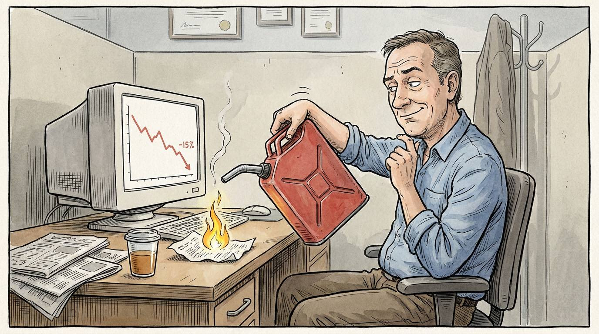

Taking a loss is never pleasant, but it's part of the game… We knew the risk, the trade didn't work, and we got out. So what…
But then we look at the red number on the blotter…
And suddenly the next trade has an extra job to do; it needs to 'get that money back'.
So perhaps we're a little less precise about the entry.
A trade we'd normally pass on starts looking 'good enough'.
Maybe we add a bit more size because, well, we only need a small move to get back to B/E on the day…
We're still looking at the same charts, but the question has changed from “Is this a good trade?” to “Can this get me back to breakeven?” often without even realising it…
And that's where one perfectly acceptable, normal loss can turn into a much more expensive situation.
ONE LOSS IS ENOUGH

Tonight's Train Your Trading Brain webinar with Pepperstone is:
One Loss Is Enough: Breaking the Revenge Trading Cycle.
We'll look at what triggers the revenge-trading urge, the warning signs we can catch before the next trade, and tactical circuit breakers to interrupt the sequence.
Because knowing we shouldn't revenge trade is fairly easy, right?
But catching ourselves when we're convinced the next trade is a brilliant idea… that's the useful bit.
Join me tonight at 7 pm UK time.
If you've ever taken a few sneaky revenge trades, this one might come in handy…